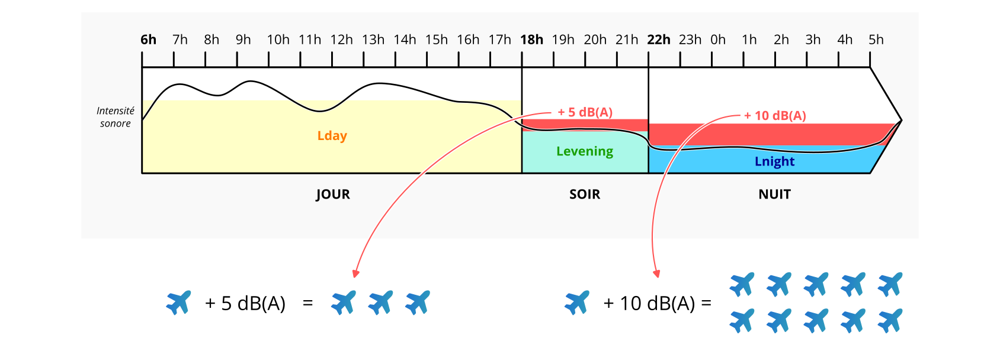
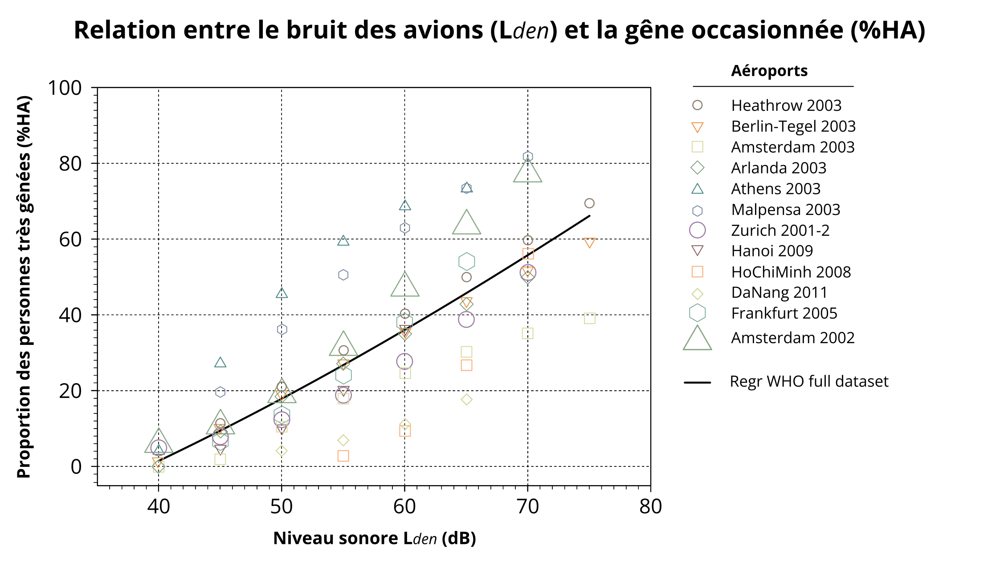
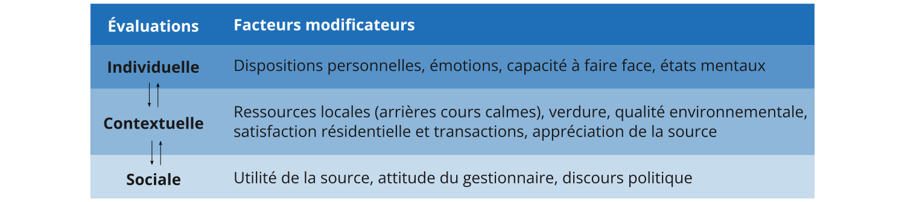
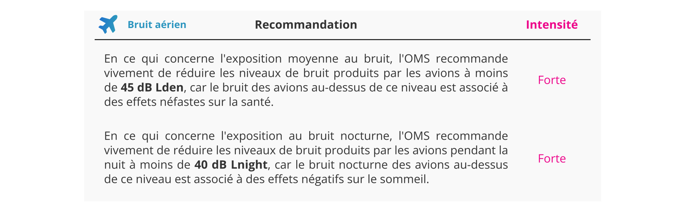
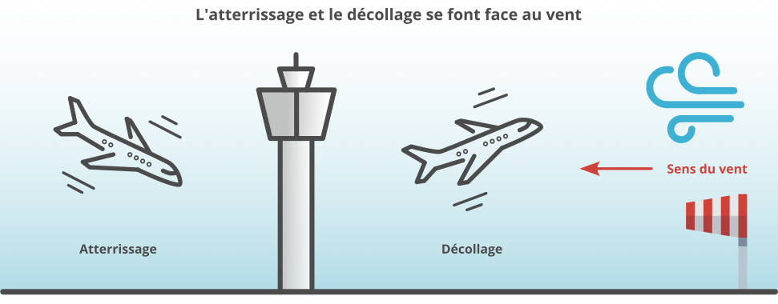
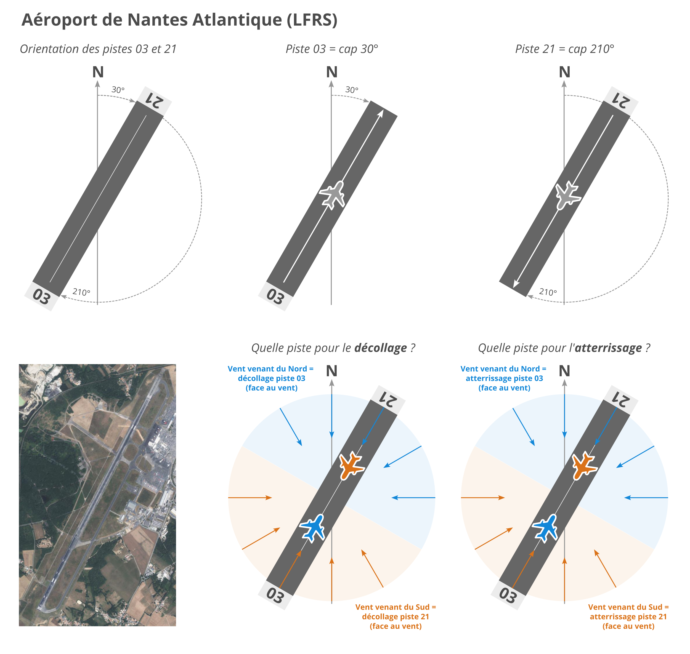
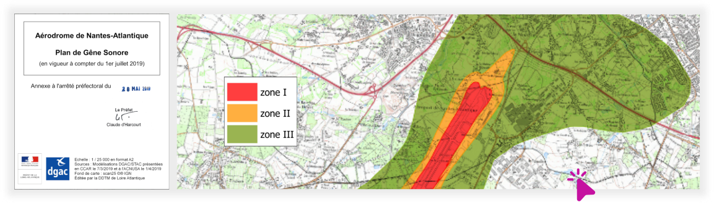

Préambule
Sur cette page nous présentons différentes notions qui ont été mobilisées pour réaliser ce travail sur le bruit des avions.
L'intérêt du partage de ces notions est de permettre une acculturation des citoyens et des élus et agents de la Ville de Rezé sur la problématique du bruit aérien, nécessaire pour mieux appréhender les enjeux et les facteurs influençant le bruit et ses impacts.
Les éléments détaillés ici viennent en complément des informations déjà présentées sur les pages Notions et Indicateurs.
-----
Décibels et indicateurs /
Effets du bruit des avions /
Éléments d'aéronautique /
Plans réglemenataires /
L'importance du dialogue /
Aller plus loin
Décibels
et indicateurs
Les niveaux de bruit sont exprimés en décibels. Il résulte de cette échelle quelques éléments qui peuvent paraître contre-intuitifs pour les non-initiés, comme le fait que rajouter 3 dB à un niveau sonore équivaut à doubler ce même niveau sonore.
Par exemple :
- multiplier par deux le nombre d’avions augmente les niveaux de 3 décibels,
- multiplier par dix le nombre d’avions augmente les niveaux de 10 décibels.
Les choses se compliquent si on s’intéresse à la perception du bruit. En effet, l’oreille humaine a elle aussi une réponse non linéaire. Des études montrent que le niveau sonore doit augmenter de 10 décibels pour avoir une impression de doublement de l’intensité sonore perçue, une différence de 3 décibels étant à peine perçue.
Comparatif
Ci-dessous, vous trouverez 3 pistes audio permettant de comparer une même scène sonore : le passage d'un avion.
Pour les besoins de l'expérience, et à l'aide d'un logiciel de traitement du signal, nous avons soustrait 1 dB, puis 3 dB à la piste de référence.
On remarque qu'il est très difficile, voir impossible, de faire la différence.
Piste de référence
Piste de référence, mais avec 1 dB de moins
Piste de référence, mais avec 3 dB de moins
Ainsi, baisser le niveau sonore d’un avion de 3 décibels est à peine perceptible, alors que réduire de moitié le nombre d’avions l’est… Pour tenir compte de cela, de nombreux chercheurs, ainsi que l’OMS, recommandent de recourir à l’utilisation de nouveaux indicateurs, tels que les niveaux maximums LAmax (voir la page Indicateurs), ou bien des statistiques telles que le nombre d’évènements dépassant un seuil donné.
Pour plus de détails, n'hésitez pas à consulter la page Notions.
L'indicateur LDEN
Comme présenté sur la page Indicateurs, l'indicateur LDEN correspond au niveau équivalent (LAeq) calculé sur une période de 24h. Ici "DEN" signifie "Day-Evening-Night" ("Jour-Soir-Nuit" en français), soit les 3 périodes réglementaires citées précédemment.
Pour tenir compte du fait que le bruit est plus gênant en soirée et la nuit, des termes correctifs majorants de +5 dB(A) et +10 dB(A) sont appliqués en soirée et la nuit.
Appliquée aux avions, cette règle implique qu'un avion passant le soir équivaut à 3 passages (en journée). De même, un passage la nuit équivaut à 10 survols. En France, la période retenue pour définir le soir est [18:00-22:00], et la période retenue pour définir la nuit est [22:00-06:00]. Ces périodes peuvent varier d’un pays à l’autre.


Effets du bruit
des avions
Les indicateurs principaux retenus par l’Organisation Mondiale de la Santé (OMS) pour décrire les effets du bruit des avions sont la gêne et la perturbation du sommeil.
La gêne
De nombreux travaux prouvent l'existence d'un lien entre le bruit des avions et la gêne occasionnée. Des enquêtes ont été effectuées sur un nombre divers d’aéroport (Heathrow 2003, Berlin-Tegel 2003, Amsterdam 2003, etc.), totalisant plus de 17000 répondants aux enquêtes de gêne. L’analyse de ces enquêtes a permis de dresser une relation donnant le nombre de personnes très gênées par le bruit en fonction du niveau sonore (indicateur Lden estimé par des modèles) (Guski et al., 2017).

De plus, il est important de rappeler les points suivants :
- La courbe représente des chiffres moyens (par exemple, 18% des habitants sont très gênés par le bruit des avions pour un niveau Lden de 50 dBA). On observe cependant de large disparités entre les individus : pour deux individus exposés à un même niveau sonore, l’un.e peut être gêné.e et l’autre pas. De nombreux facteurs influencent en effet la gêne :

- Les études référencées ont une large variabilité. Par exemple, pour un niveau Lden de 50 dB(A), le nombre de personnes très gênées s’échelonne entre 7% et 45%. Cette variabilité peut avoir de nombreuses causes : attitude du gestionnaire, moment où a été faite l’enquête, présence de couvre-feu ou pas, taille de l’aéroport (à niveau de bruit équivalent, un gros aéroport correspond à de nombreux avions lointains et un petit aéroport à moins d’avions, mais proches…), etc.
La perturbation du sommeil
De la même manière, des relations ont été produites par l’OMS, sur la base de synthèse d’études scientifiques, reliant les niveaux de bruit nocturnes moyens (Lnight) au pourcentage de personnes très perturbées dans leur sommeil (HSD - High Sleep Disturbance) (Exemple : à 40dB la nuit, 11.3 % de la population est très perturbée).
Pour mieux prendre compte l’effet évènementiel, l’OMS souligne l’intérêt d’utiliser des indicateurs événementiels, tels que la distribution des LAmax (niveaux de bruit maximums au passage des avions).
Recommandations de l’OMS
Pour réduire les effets sur la santé, l’Organisation Mondiale de la Santé (OMS) recommande vivement aux décideurs politiques de mettre en œuvre des mesures appropriées pour réduire l'exposition au bruit des avions dans la population exposée à des niveaux supérieurs aux valeurs guides pour l'exposition au bruit moyen et nocturne. Pour des interventions spécifiques, l’OMS recommande de mettre en œuvre des changements appropriés dans l'infrastructure.

Éléments
d'aéronautique
L'importance du sens du vent
Deux types de vitesse
En aéronautique, il existe deux types de vitesses : la vitesse SOL et la vitesse AIR.
- La vitesse SOL est similaire à celle de votre voiture, c'est la vitesse de déplacement par rapport au sol, qui est fixe.
- La vitesse AIR est la vitesse de déplacement de l'avion dans la masse d'air, qui est rarement statique. Par analogie, cette vitesse est mesurable en évaluant la pression de l'air sur votre main lorsque vous la sortez par la fenêtre de votre voiture. Plus la pression est forte plus votre vitesse est élevée. Il en est de même pour l'avion avec la vitesse AIR.
Pourquoi décoller face au vent ?
Lorsqu'un avion décolle, il le fait avec une vitesse AIR (en entrant dans une masse d'air), et non avec une vitesse SOL. Prenons par exemple un avion sur la piste, prêt à décoller, mais immobile, avec un vent de 30 km/h de face. Sa vitesse SOL est alors nulle car il ne se déplace pas, mais sa vitesse AIR est de 30 km/h. Si l'avion décolle à 230 km/h AIR, il n'aura besoin d'atteindre qu'une vitesse de 200 km/h SOL, car il bénéficie déjà de 30 km/h AIR. En revanche, s'il décollait avec un vent arrière de 30 km/h, il devrait atteindre une vitesse de 260 km/h SOL pour pouvoir décoller. Ainsi, les avions décollent (théoriquement) face au vent pour des raisons de sécurité et d'économie de carburant, permettant des décollages plus courts et plus sûr.
Quid des atterrissages ?
Pour les mêmes raisons qu'avec le décollage, les atterrissages se font généralement face au vent. Cette force contraire permet aux avions de maintenir une vitesse AIR élevée, tout en réduisant leur vitesse SOL (le but étant d'avoir à la fin une vitesse SOL = 0). Grâce à cela, les distances d'atterrissages sont plus courtes et garantissent ainsi une meilleure sécurité.

Et si le vent est faible, voire inexistant ?
Si le vent est très faible ou inexistant, les deux pistes peuvent être utilisées indifféremment. La tour de contrôle s'appuie alors sur d'autrs critères pour faire son choix.
Pourquoi certains avions virent à l'est et d'autres à l'ouest une fois décollé ?
Une fois que la piste de décollage est déterminée, l'avion peut décoller. Très rapidement après, alors que l'avion est encore en phase de prise d'altitude, celui-ci va opérer un virage pour s'aligner avec la trajetoire de sa destination.
Dans ce contexte, Rezé est principalement concernée par les avions décollant piste 03 (voir explication plus bas) et dont la trajectoire part vers l'est. À l'inverse, ceux dont la trajectoire part vers l'ouest vont rapidement tourner vers Bouguenais.
La réparitition des avions entre l'est et l'ouest, est donc essentiellement dûe à une question de destination.
L'aéroport de Nantes-Atlantique
L'aéroport de Nantes-Atlantique (LFRS) comporte une piste, qu'il est possible d'emprunter dans les deux sens. Pour savoir de quel sens on parle, on se base sur le cap* utilisé par l'avion (pour atterrir ou décoller) :
- Piste 03 : cap à 30°,
- Piste 21 : cap à 210°.
* Le cap étant l'angle formé entre la trajectoire et le nord (ici exprimé en degré °). Pour faire simple, il s'agit de la direction prise par l'avion.
Quelle piste utiliser en fonction du vent ?
Nous avons vu précédemment qu'un avion doit décoller ou atterrir face au vent. Dès lors, :
- lorsque le vent vient du nord : les atterrissages et les décollages se font vers le nord, soit sur la piste 03,
- lorsque le vent vient du sud : les atterrissages et les décollages se font vers le sud, soit sur la piste 21.
On résume pour Rezé
Sur la base de ces éléments, si on résume spécifiquement pour la ville de Rezé (qui se situe au nord-est de l'aéroport) :
- les avions survolent Rezé au décollage, lorsque le vent vient du nord (piste 03),
- les avions survolent Rezé à l'atterrissage, lorsque le vent vient du sud (piste 21).
Remarque : ces éléments sont valables de manière générale. Néanmoins, dans certains cas il est possible d'y déroger en fonction de paramètres spécifiques (ex: météo particulière, visibilité, appréciation du pilote, ...)
Le schéma ci-dessous reprend tous ces éléments.

Plans
réglementaires
PPBE
Le Plan de Prévention du Bruit dans l’Environnement (PPBE) est un document réglementaire ayant pour objectif de "prévenir les effets du bruit, de réduire, si nécessaire, les niveaux de bruit, et à protéger les zones calmes". Pour réaliser ce document, les autorités compétentes se basent notamment sur les Cartes de Bruit Stratégiques (CBS).
Ce document, transposé dans le droit français, est issu de la Directive Européenne 2002L/49/CE.
Pour ce qui est des aéroports, l'autorité compétente pour produire le PPBE est la Direction départementale des territoires et de la mer (DDTM), sous l’autorité du Préfet.
De manière concrète, le PPBE permet notamment d'évaluer le nombre de personnes exposées à un niveau de bruit excessif et d'identifier les sources de bruit devant être réduites.
Pour en savoir plus, vous pouvez consulter cette page.
PGS
Le Plan de Gêne Sonore (PGS) est un document réglementaire qui permet de mettre en évidence les zones dans lesquelles les habitants proches d'un aéroport peuvent bénéficier d'une aide financière pour insonoriser leur habitation.
Pour savoir si une habitation est éligible, il faut regarder si elle est présente dans une des trois zones ci-dessous :
- Zone 1 : >70 dB (Lden - gêne très forte),
- Zone 2 : 65-70 dB (Lden - gêne forte),
- Zone 3 : 55-65 dB (Lden - gêne modérée).
Exemple avec le PGS de l'aéroport de Nantes-Atlantique (2019).

L'importance
du dialogue
Le projet de recheche européen ANIMA (Aviation Noise Impact Management through Novel Approaches) s'est intéressé aux pratiques de gestion de l'impact du bruit autour des aéroports. Parmi les nombreux résultats issus de ce projet on note les conclusions suivantes :
Ne présumez pas des attentes des communautés. Soyez juste juste avec elles, écoutez les et donnez leur les moyens d'agir :
- Une partie substantielle de la gêne provient du sentiment d'être privé de tout moyen de faire face au bruit de l'aviation;
- Les aéroports devraient engager un véritable dialogue avec toutes les parties prenantes;
- Les jargon et les attitudes dominantes doivent être bannis afin de donner un accès équitable à l'expertise à tous les publics;
- Les aéroports doivent impliquer localement leur communauté afin de parvenir à un consensus entre toutes les parties prenantes, y compris la majorité silencieuse, puis d'approuver les conclusions auxquelles le groupe est parvenu.
Aller plus loin
Quelques ressources pour aller plus loin sur le sujet
- Bruitpedia, réalisé par BruitParif
- Francilophone n°46 spécial "Bruit du trafic aérien", réalisé par BruitParif
- Bruit des avions et santé des riverains d’aéroport, rapport provenant du projet de recherche DEBATS (Discussion sur les Effets du Bruit des Aéronefs Touchant la Santé)
- Aviation Noise Impact Management, synthèse / livre (en anglais) produit dans le cadre du projet ANIMA, portant sur le bruit des avions
- Environmental noise guidelines for the European Region, guide (en anglais) portant sur le bruit dans l'environnement, produit par l'Organisation Mondiale de la Santé (OMS - World Health Organization)